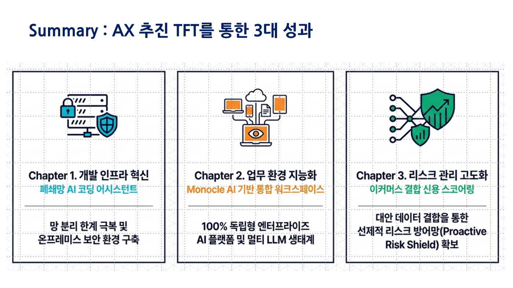

서울평가정보는 기업과 개인의 신용을 평가하고 휴대폰 본인확인을 연 2억 5천만 건 처리하는 직원 200명 규모의 회사다. 고객의 민감한 금융 정보를 다루기 때문에 2006년부터 망분리(회사 컴퓨터망을 인터넷과 분리하는 금융권 규제)를 지켜야 해서, ChatGPT 같은 외부 AI에 질문 하나 보내려면 매번 결재를 받고 보안 USB로 옮기는 일을 개발 한 건에 수백 번 반복해야 했다. 게다가 사업마다 쓰는 프로그래밍 언어가 SAS, Java, C, 파워빌더로 제각각이라 개발자들이 서로의 코드를 읽지 못하는 문제도 있었다. 발표자는 전 직장 대기업에서 AI 조직 60~100명을 이끈 임원 출신인데, 그 경험에서 AI 프로젝트가 실패하는 세 가지 이유를 먼저 정리했다. ① AI와 업무를 모두 아는 인재가 없고 ② 사용자가 정말 필요로 하는지 따지지 않은 채 경쟁사를 따라하며 ③ 보여주기식 전시성 프로젝트를 벌이기 때문이다.
그래서 원칙을 거꾸로 세웠다. 크게가 아니라 되게, 즉 반드시 성공 가능하고 작아도 눈에 보이는 성과가 나며 실무에 실제 도움이 되는 과제만 고르기로 했다. 현업 8명과 IT 4명, 딱 12명의 팀이 한 달 만에 세 가지 과제를 정했다. 첫째, 인터넷 없이 회사 안에서만 돌아가는 AI 코딩 도우미를 들여놓는 것이다. 국내외 7개 회사를 비교했더니 기능 점수는 JetBrains가 앞섰지만(85.5점 대 78.65점) 클라우드 방식이라 폐쇄망에 못 들어오기 때문에, 회사 안에 통째로 설치할 수 있고 5년 총비용도 49% 싼(4.29억 원 대 2.18억 원) Wyhil의 Prometheus를 골랐다. 둘째, 직원들에게는 ChatGPT, Claude, Gemini, Perplexity를 한 화면에서 골라 쓰는 통합 서비스 '모노클 AI'를 상장사 최초로 도입했다. 셋째, 티몬·위메프 사태 이후 쿠팡 셀러에게 정산금을 먼저 주는 팩토링 회사와 손잡고, 이커머스 판매 데이터와 자사의 전국민 신용 데이터를 가명결합(개인을 알아볼 수 없게 처리해 두 회사 데이터를 합치는 것)해 부실을 미리 알아채는 신용평가 모델을 만들기로 했다.
모노클 AI 덕분에 직원마다 따로 내던 AI 구독료 연 2억 원이 약 4천만 원으로 80% 줄었다. 코딩 도우미는 계약을 마치고 회사 시스템과 연결하는 단계이며, "내가 짠 Java를 C로 바꿔줘" 같은 언어 번역 보조로 쓰되 최종 검증은 반드시 개발자가 한다는 원칙을 세웠다. 신용평가 모델은 LightGBM(불균형 데이터에 강한 머신러닝 기법)을 바탕으로 10월 완성을 향해 진행 중이다. 발표자는 외부 AI로 만든 결과물을 내부망으로 가져오는 길목에서 여전히 망분리가 발목을 잡는다고 한계도 솔직하게 인정했다. 심사위원들은 리더의 비전이 없으면 몇 년 걸렸을 일을 빠르게 해냈다며, 수십 년 도메인 지식에 AI가 더해질 때의 속도에 감탄했다.